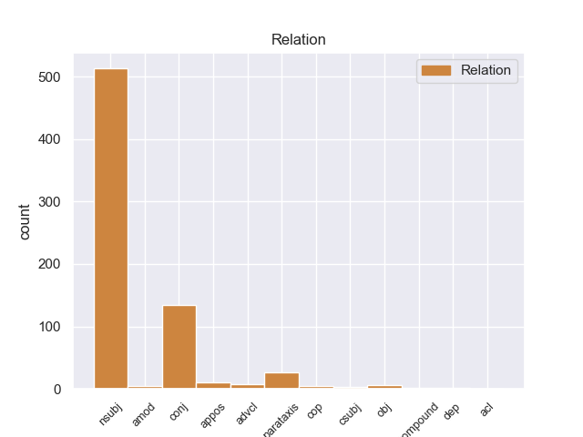
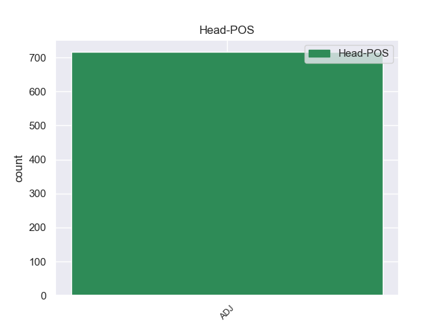
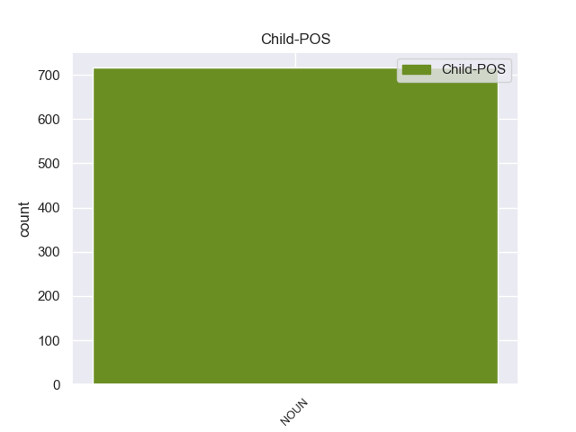

Distribution of features within this leaf



Agreement Rules sorted by frequency.
- When the dependent token is the nominal subject(nsubj) of the head token, and the head token is ADJ and the dependent token is NOUN.
1 " _ _ _ _ 0 _ _ _
2 Tenemos _ _ _ _ 0 _ _ _
3 todo _ _ _ _ 0 _ _ _
4 listo _ _ _ _ 0 _ _ _
5 , _ _ _ _ 0 _ _ _
6 la _ _ _ _ 0 _ _ _
7 venta _ _ _ _ 0 _ _ _
8 de _ _ _ _ 0 _ _ _
9 boletos _ _ _ _ 0 _ _ _
10 será _ _ _ _ 0 _ _ _
11 a _ _ _ _ 0 _ _ _
12 partir _ _ _ _ 0 _ _ _
13 de _ _ _ _ 0 _ _ _
14 mañana _ _ _ _ 0 _ _ _
15 de _ _ _ _ 0 _ _ _
16 8 _ _ _ _ 0 _ _ _
17 am _ _ _ _ 0 _ _ _
18 a _ _ _ _ 0 _ _ _
19 3 _ _ _ _ 0 _ _ _
20 pm _ _ _ _ 0 _ _ _
21 , _ _ _ _ 0 _ _ _
22 la _ _ _ _ 0 _ _ _
23 afición _ _ _ _ 0 _ _ _
24 de _ _ _ _ 0 _ _ _
25 el _ _ _ _ 0 _ _ _
26 Real _ _ _ _ 0 _ _ _
27 España _ _ _ _ 0 _ _ _
28 podrá _ _ _ _ 0 _ _ _
29 comprar _ _ _ _ 0 _ _ _
30 en _ _ _ _ 0 _ _ _
31 el _ _ _ _ 0 _ _ _
32 Banco _ _ _ _ 0 _ _ _
33 Continental _ _ _ _ 0 _ _ _
34 , _ _ _ _ 0 _ _ _
35 frente _ _ _ _ 0 _ _ _
36 a _ _ _ _ 0 _ _ _
37 el _ _ _ _ 0 _ _ _
38 estadio _ _ _ _ 0 _ _ _
39 Morazán _ _ _ _ 0 _ _ _
40 , _ _ _ _ 0 _ _ _
41 se _ _ _ _ 0 _ _ _
42 han _ _ _ _ 0 _ _ _
43 puesto _ _ _ _ 0 _ _ _
44 a _ _ _ _ 0 _ _ _
45 la _ _ _ _ 0 _ _ _
46 venta _ _ _ _ 0 _ _ _
47 800 _ _ _ _ 0 _ _ _
48 boletos _ _ _ _ 0 _ _ _
49 , _ _ _ _ 0 _ _ _
50 500 _ _ _ _ 0 _ _ _
51 en _ _ _ _ 0 _ _ _
52 sol _ _ _ _ 0 _ _ _
53 y _ _ _ _ 0 _ _ _
54 300 _ _ _ _ 0 _ _ _
55 en _ _ _ _ 0 _ _ _
56 preferencia _ _ _ _ 0 _ _ _
57 , _ _ _ _ 0 _ _ _
58 la _ _ _ _ 0 _ _ _
59 boletería boletería NOUN _ Gender=Fem|Number=Sing 65 nsubj _ _
60 de _ _ _ _ 0 _ _ _
61 el _ _ _ _ 0 _ _ _
62 España _ _ _ _ 0 _ _ _
63 está _ _ _ _ 0 _ _ _
64 ya _ _ _ _ 0 _ _ _
65 identificada identificado ADJ _ Gender=Fem|Number=Sing|VerbForm=Part 0 _ _ _
66 con _ _ _ _ 0 _ _ _
67 el _ _ _ _ 0 _ _ _
68 escudo _ _ _ _ 0 _ _ _
69 de _ _ _ _ 0 _ _ _
70 el _ _ _ _ 0 _ _ _
71 equipo _ _ _ _ 0 _ _ _
72 y _ _ _ _ 0 _ _ _
73 con _ _ _ _ 0 _ _ _
74 el _ _ _ _ 0 _ _ _
75 color _ _ _ _ 0 _ _ _
76 amarillo _ _ _ _ 0 _ _ _
77 " _ _ _ _ 0 _ _ _
78 , _ _ _ _ 0 _ _ _
79 comentó _ _ _ _ 0 _ _ _
80 Rolin _ _ _ _ 0 _ _ _
81 . _ _ _ _ 0 _ _ _
1 La _ _ _ _ 0 _ _ _
2 experimentación _ _ _ _ 0 _ _ _
3 de _ _ _ _ 0 _ _ _
4 Torres _ _ _ _ 0 _ _ _
5 Quevedo _ _ _ _ 0 _ _ _
6 en _ _ _ _ 0 _ _ _
7 el _ _ _ _ 0 _ _ _
8 área _ _ _ _ 0 _ _ _
9 de _ _ _ _ 0 _ _ _
10 transbordadores _ _ _ _ 0 _ _ _
11 , _ _ _ _ 0 _ _ _
12 funiculares funicular ADJ _ Gender=Masc|Number=Plur 0 _ _ _
13 o _ _ _ _ 0 _ _ _
14 teleféricos teleférico NOUN _ Gender=Masc|Number=Plur 12 conj _ SpaceAfter=No
15 , _ _ _ _ 0 _ _ _
16 comenzó _ _ _ _ 0 _ _ _
17 muy _ _ _ _ 0 _ _ _
18 pronto _ _ _ _ 0 _ _ _
19 durante _ _ _ _ 0 _ _ _
20 su _ _ _ _ 0 _ _ _
21 residencia _ _ _ _ 0 _ _ _
22 en _ _ _ _ 0 _ _ _
23 su _ _ _ _ 0 _ _ _
24 pueblo _ _ _ _ 0 _ _ _
25 natal _ _ _ _ 0 _ _ _
26 , _ _ _ _ 0 _ _ _
27 Molledo _ _ _ _ 0 _ _ _
28 . _ _ _ _ 0 _ _ _
1 Además _ _ _ _ 0 _ _ _
2 el _ _ _ _ 0 _ _ _
3 sitio _ _ _ _ 0 _ _ _
4 es _ _ _ _ 0 _ _ _
5 precioso precioso ADJ _ Gender=Masc|Number=Sing 0 _ _ _
6 , _ _ _ _ 0 _ _ _
7 un _ _ _ _ 0 _ _ _
8 pueblecito pueblecito NOUN _ Gender=Masc|Number=Sing 5 parataxis _ _
9 muy _ _ _ _ 0 _ _ _
10 pequeño _ _ _ _ 0 _ _ _
11 rodeado _ _ _ _ 0 _ _ _
12 de _ _ _ _ 0 _ _ _
13 vegetación _ _ _ _ 0 _ _ _
14 . _ _ _ _ 0 _ _ _
1 La _ _ _ _ 0 _ _ _
2 educación _ _ _ _ 0 _ _ _
3 formal _ _ _ _ 0 _ _ _
4 en _ _ _ _ 0 _ _ _
5 Colombia _ _ _ _ 0 _ _ _
6 tiene _ _ _ _ 0 _ _ _
7 los _ _ _ _ 0 _ _ _
8 niveles _ _ _ _ 0 _ _ _
9 de _ _ _ _ 0 _ _ _
10 educación _ _ _ _ 0 _ _ _
11 preescolar _ _ _ _ 0 _ _ _
12 , _ _ _ _ 0 _ _ _
13 básica básico ADJ _ Gender=Fem|Number=Sing 0 _ _ _
14 ( _ _ _ _ 0 _ _ _
15 primaria primario NOUN _ Gender=Fem|Number=Sing 13 appos _ _
16 y _ _ _ _ 0 _ _ _
17 secundaria _ _ _ _ 0 _ _ _
18 o _ _ _ _ 0 _ _ _
19 bachillerato _ _ _ _ 0 _ _ _
20 ) _ _ _ _ 0 _ _ _
21 , _ _ _ _ 0 _ _ _
22 media _ _ _ _ 0 _ _ _
23 vocacional _ _ _ _ 0 _ _ _
24 y _ _ _ _ 0 _ _ _
25 educación _ _ _ _ 0 _ _ _
26 superior _ _ _ _ 0 _ _ _
27 . _ _ _ _ 0 _ _ _
1 Pero _ _ _ _ 0 _ _ _
2 las _ _ _ _ 0 _ _ _
3 comisiones _ _ _ _ 0 _ _ _
4 pueden _ _ _ _ 0 _ _ _
5 ser _ _ _ _ 0 _ _ _
6 también _ _ _ _ 0 _ _ _
7 delictuosas delictuoso ADJ _ Gender=Fem|Number=Plur 0 _ _ _
8 , _ _ _ _ 0 _ _ _
9 cuando _ _ _ _ 0 _ _ _
10 están _ _ _ _ 0 _ _ _
11 ocultas oculto NOUN _ Gender=Fem|Number=Plur 7 advcl _ _
12 para _ _ _ _ 0 _ _ _
13 legitimar _ _ _ _ 0 _ _ _
14 capitales _ _ _ _ 0 _ _ _
15 provenientes _ _ _ _ 0 _ _ _
16 de _ _ _ _ 0 _ _ _
17 la _ _ _ _ 0 _ _ _
18 corrupción _ _ _ _ 0 _ _ _
19 . _ _ _ _ 0 _ _ _
1 El _ _ _ _ 0 _ _ _
2 reconocimiento _ _ _ _ 0 _ _ _
3 internacional _ _ _ _ 0 _ _ _
4 de _ _ _ _ 0 _ _ _
5 Kalatózov _ _ _ _ 0 _ _ _
6 llegó _ _ _ _ 0 _ _ _
7 con _ _ _ _ 0 _ _ _
8 el _ _ _ _ 0 _ _ _
9 estreno _ _ _ _ 0 _ _ _
10 de _ _ _ _ 0 _ _ _
11 el _ _ _ _ 0 _ _ _
12 melodrama _ _ _ _ 0 _ _ _
13 Cuando _ _ _ _ 0 _ _ _
14 pasan _ _ _ _ 0 _ _ _
15 las _ _ _ _ 0 _ _ _
16 cigüeñas _ _ _ _ 0 _ _ _
17 ( _ _ _ _ 0 _ _ _
18 Letyat _ _ _ _ 0 _ _ _
19 zhuravlí _ _ _ _ 0 _ _ _
20 , _ _ _ _ 0 _ _ _
21 1957 _ _ _ _ 0 _ _ _
22 ) _ _ _ _ 0 _ _ _
23 considerada considerar ADJ _ Gender=Fem|Number=Sing|VerbForm=Part 0 _ _ _
24 la _ _ _ _ 0 _ _ _
25 primera primero NOUN _ Gender=Fem|Number=Sing 23 obj _ _
26 de _ _ _ _ 0 _ _ _
27 sus _ _ _ _ 0 _ _ _
28 obras _ _ _ _ 0 _ _ _
29 maestras _ _ _ _ 0 _ _ _
30 y _ _ _ _ 0 _ _ _
31 uno _ _ _ _ 0 _ _ _
32 de _ _ _ _ 0 _ _ _
33 los _ _ _ _ 0 _ _ _
34 hitos _ _ _ _ 0 _ _ _
35 de _ _ _ _ 0 _ _ _
36 el _ _ _ _ 0 _ _ _
37 cine _ _ _ _ 0 _ _ _
38 soviético _ _ _ _ 0 _ _ _
39 . _ _ _ _ 0 _ _ _
1 El _ _ _ _ 0 _ _ _
2 libro _ _ _ _ 0 _ _ _
3 de _ _ _ _ 0 _ _ _
4 Foster _ _ _ _ 0 _ _ _
5 provocó _ _ _ _ 0 _ _ _
6 de _ _ _ _ 0 _ _ _
7 forma _ _ _ _ 0 _ _ _
8 inmediata _ _ _ _ 0 _ _ _
9 ataques _ _ _ _ 0 _ _ _
10 de _ _ _ _ 0 _ _ _
11 sus _ _ _ _ 0 _ _ _
12 fans _ _ _ _ 0 _ _ _
13 , _ _ _ _ 0 _ _ _
14 incluyendo _ _ _ _ 0 _ _ _
15 Hefner _ _ _ _ 0 _ _ _
16 y _ _ _ _ 0 _ _ _
17 Harlan _ _ _ _ 0 _ _ _
18 Ellison _ _ _ _ 0 _ _ _
19 , _ _ _ _ 0 _ _ _
20 así _ _ _ _ 0 _ _ _
21 como _ _ _ _ 0 _ _ _
22 un _ _ _ _ 0 _ _ _
23 comunicado _ _ _ _ 0 _ _ _
24 de _ _ _ _ 0 _ _ _
25 Page _ _ _ _ 0 _ _ _
26 denunciando _ _ _ _ 0 _ _ _
27 que _ _ _ _ 0 _ _ _
28 estaba _ _ _ _ 0 _ _ _
29 " _ _ _ _ 0 _ _ _
30 lleno _ _ _ _ 0 _ _ _
31 de _ _ _ _ 0 _ _ _
32 mentiras _ _ _ _ 0 _ _ _
33 " _ _ _ _ 0 _ _ _
34 , _ _ _ _ 0 _ _ _
35 porque _ _ _ _ 0 _ _ _
36 ellos _ _ _ _ 0 _ _ _
37 no _ _ _ _ 0 _ _ _
38 estaban _ _ _ _ 0 _ _ _
39 felices _ _ _ _ 0 _ _ _
40 de _ _ _ _ 0 _ _ _
41 que _ _ _ _ 0 _ _ _
42 el _ _ _ _ 0 _ _ _
43 libro _ _ _ _ 0 _ _ _
44 revelara _ _ _ _ 0 _ _ _
45 que _ _ _ _ 0 _ _ _
46 un _ _ _ _ 0 _ _ _
47 oficial _ _ _ _ 0 _ _ _
48 de _ _ _ _ 0 _ _ _
49 policía _ _ _ _ 0 _ _ _
50 de _ _ _ _ 0 _ _ _
51 Los _ _ _ _ 0 _ _ _
52 Ángeles _ _ _ _ 0 _ _ _
53 había _ _ _ _ 0 _ _ _
54 reportado _ _ _ _ 0 _ _ _
55 que _ _ _ _ 0 _ _ _
56 Page _ _ _ _ 0 _ _ _
57 sufría _ _ _ _ 0 _ _ _
58 de _ _ _ _ 0 _ _ _
59 esquizofrenia _ _ _ _ 0 _ _ _
60 paranoide _ _ _ _ 0 _ _ _
61 y _ _ _ _ 0 _ _ _
62 que _ _ _ _ 0 _ _ _
63 , _ _ _ _ 0 _ _ _
64 a _ _ _ _ 0 _ _ _
65 la _ _ _ _ 0 _ _ _
66 edad _ _ _ _ 0 _ _ _
67 de _ _ _ _ 0 _ _ _
68 56 _ _ _ _ 0 _ _ _
69 años _ _ _ _ 0 _ _ _
70 , _ _ _ _ 0 _ _ _
71 había _ _ _ _ 0 _ _ _
72 apuñalado _ _ _ _ 0 _ _ _
73 a _ _ _ _ 0 _ _ _
74 sus _ _ _ _ 0 _ _ _
75 caseros casero ADJ _ Gender=Masc|Number=Plur 0 _ _ _
76 ancianos anciano NOUN _ Gender=Masc|Number=Plur 75 amod _ _
77 en _ _ _ _ 0 _ _ _
78 la _ _ _ _ 0 _ _ _
79 tarde _ _ _ _ 0 _ _ _
80 de _ _ _ _ 0 _ _ _
81 el _ _ _ _ 0 _ _ _
82 19 _ _ _ _ 0 _ _ _
83 de _ _ _ _ 0 _ _ _
84 abril _ _ _ _ 0 _ _ _
85 de _ _ _ _ 0 _ _ _
86 1979 _ _ _ _ 0 _ _ _
87 , _ _ _ _ 0 _ _ _
88 en _ _ _ _ 0 _ _ _
89 un _ _ _ _ 0 _ _ _
90 ataque _ _ _ _ 0 _ _ _
91 no _ _ _ _ 0 _ _ _
92 provocado _ _ _ _ 0 _ _ _
93 durante _ _ _ _ 0 _ _ _
94 un _ _ _ _ 0 _ _ _
95 arranque _ _ _ _ 0 _ _ _
96 de _ _ _ _ 0 _ _ _
97 locura _ _ _ _ 0 _ _ _
98 . _ _ _ _ 0 _ _ _
1 Casino _ _ _ _ 0 _ _ _
2 Arica _ _ _ _ 0 _ _ _
3 es _ _ _ _ 0 _ _ _
4 el _ _ _ _ 0 _ _ _
5 segundo segundo NOUN _ Gender=Masc|Number=Sing 7 cop _ _
6 más _ _ _ _ 0 _ _ _
7 antiguo antiguo ADJ _ Gender=Masc|Number=Sing 0 _ _ _
8 de _ _ _ _ 0 _ _ _
9 el _ _ _ _ 0 _ _ _
10 país _ _ _ _ 0 _ _ _
11 , _ _ _ _ 0 _ _ _
12 creado _ _ _ _ 0 _ _ _
13 el _ _ _ _ 0 _ _ _
14 17 _ _ _ _ 0 _ _ _
15 de _ _ _ _ 0 _ _ _
16 marzo _ _ _ _ 0 _ _ _
17 de _ _ _ _ 0 _ _ _
18 1960 _ _ _ _ 0 _ _ _
19 en _ _ _ _ 0 _ _ _
20 la _ _ _ _ 0 _ _ _
21 Hostería _ _ _ _ 0 _ _ _
22 Arica _ _ _ _ 0 _ _ _
23 ( _ _ _ _ 0 _ _ _
24 actual _ _ _ _ 0 _ _ _
25 Hotel _ _ _ _ 0 _ _ _
26 Arica _ _ _ _ 0 _ _ _
27 ) _ _ _ _ 0 _ _ _
28 . _ _ _ _ 0 _ _ _
1 Seguro seguro ADJ _ Gender=Masc|Number=Sing 0 _ _ _
2 que _ _ _ _ 0 _ _ _
3 no _ _ _ _ 0 _ _ _
4 va _ _ _ _ 0 _ _ _
5 a _ _ _ _ 0 _ _ _
6 ser _ _ _ _ 0 _ _ _
7 el _ _ _ _ 0 _ _ _
8 último último NOUN _ Gender=Masc|Number=Sing 1 csubj _ SpaceAfter=No
9 . _ _ _ _ 0 _ _ _
1 Un _ _ _ _ 0 _ _ _
2 subtipo _ _ _ _ 0 _ _ _
3 de _ _ _ _ 0 _ _ _
4 altavoz _ _ _ _ 0 _ _ _
5 activo _ _ _ _ 0 _ _ _
6 analógico _ _ _ _ 0 _ _ _
7 de _ _ _ _ 0 _ _ _
8 vía _ _ _ _ 0 _ _ _
9 única _ _ _ _ 0 _ _ _
10 diseñado _ _ _ _ 0 _ _ _
11 para _ _ _ _ 0 _ _ _
12 reproducir _ _ _ _ 0 _ _ _
13 , _ _ _ _ 0 _ _ _
14 aproximadamente _ _ _ _ 0 _ _ _
15 , _ _ _ _ 0 _ _ _
16 las _ _ _ _ 0 _ _ _
17 dos _ _ _ _ 0 _ _ _
18 primeras _ _ _ _ 0 _ _ _
19 octavas _ _ _ _ 0 _ _ _
20 ( _ _ _ _ 0 _ _ _
21 las _ _ _ _ 0 _ _ _
22 más _ _ _ _ 0 _ _ _
23 graves _ _ _ _ 0 _ _ _
24 , _ _ _ _ 0 _ _ _
25 normalmente _ _ _ _ 0 _ _ _
26 entre _ _ _ _ 0 _ _ _
27 20 _ _ _ _ 0 _ _ _
28 y _ _ _ _ 0 _ _ _
29 80 _ _ _ _ 0 _ _ _
30 Hz _ _ _ _ 0 _ _ _
31 ) _ _ _ _ 0 _ _ _
32 de _ _ _ _ 0 _ _ _
33 el _ _ _ _ 0 _ _ _
34 total _ _ _ _ 0 _ _ _
35 de _ _ _ _ 0 _ _ _
36 10 _ _ _ _ 0 _ _ _
37 que _ _ _ _ 0 _ _ _
38 forma _ _ _ _ 0 _ _ _
39 el _ _ _ _ 0 _ _ _
40 espectro _ _ _ _ 0 _ _ _
41 de _ _ _ _ 0 _ _ _
42 audiofrecuencias _ _ _ _ 0 _ _ _
43 y _ _ _ _ 0 _ _ _
44 que _ _ _ _ 0 _ _ _
45 , _ _ _ _ 0 _ _ _
46 típicamente _ _ _ _ 0 _ _ _
47 , _ _ _ _ 0 _ _ _
48 integra _ _ _ _ 0 _ _ _
49 un _ _ _ _ 0 _ _ _
50 filtro _ _ _ _ 0 _ _ _
51 paso paso NOUN _ Gender=Masc|Number=Sing 52 compound _ _
52 bajo bajo ADJ _ Gender=Masc|Number=Sing 0 _ _ _
53 activo _ _ _ _ 0 _ _ _
54 , _ _ _ _ 0 _ _ _
55 protecciones _ _ _ _ 0 _ _ _
56 de _ _ _ _ 0 _ _ _
57 sobrecarga _ _ _ _ 0 _ _ _
58 y _ _ _ _ 0 _ _ _
59 un _ _ _ _ 0 _ _ _
60 amplificador _ _ _ _ 0 _ _ _
61 dedicado _ _ _ _ 0 _ _ _
62 . _ _ _ _ 0 _ _ _
1 La _ _ _ _ 0 _ _ _
2 madre _ _ _ _ 0 _ _ _
3 se _ _ _ _ 0 _ _ _
4 casó _ _ _ _ 0 _ _ _
5 con _ _ _ _ 0 _ _ _
6 William _ _ _ _ 0 _ _ _
7 Molard _ _ _ _ 0 _ _ _
8 , _ _ _ _ 0 _ _ _
9 músico _ _ _ _ 0 _ _ _
10 medio _ _ _ _ 0 _ _ _
11 francés _ _ _ _ 0 _ _ _
12 y _ _ _ _ 0 _ _ _
13 medio medio NOUN _ Gender=Masc|Number=Sing 14 dep _ _
14 noruego noruego ADJ _ Gender=Masc|Number=Sing 0 _ _ _
15 , _ _ _ _ 0 _ _ _
16 y _ _ _ _ 0 _ _ _
17 se _ _ _ _ 0 _ _ _
18 instalaron _ _ _ _ 0 _ _ _
19 en _ _ _ _ 0 _ _ _
20 París _ _ _ _ 0 _ _ _
21 . _ _ _ _ 0 _ _ _
1 Es _ _ _ _ 0 _ _ _
2 casi _ _ _ _ 0 _ _ _
3 obligatorio obligatorio ADJ _ Gender=Masc|Number=Sing 0 _ _ _
4 atar _ _ _ _ 0 _ _ _
5 a _ _ _ _ 0 _ _ _
6 un _ _ _ _ 0 _ _ _
7 jugador _ _ _ _ 0 _ _ _
8 que _ _ _ _ 0 _ _ _
9 ha _ _ _ _ 0 _ _ _
10 pegado _ _ _ _ 0 _ _ _
11 un _ _ _ _ 0 _ _ _
12 salto _ _ _ _ 0 _ _ _
13 brutal _ _ _ _ 0 _ _ _
14 en _ _ _ _ 0 _ _ _
15 su _ _ _ _ 0 _ _ _
16 primera _ _ _ _ 0 _ _ _
17 temporada _ _ _ _ 0 _ _ _
18 , _ _ _ _ 0 _ _ _
19 siendo _ _ _ _ 0 _ _ _
20 un _ _ _ _ 0 _ _ _
21 fijo fijo NOUN _ Gender=Masc|Number=Sing 3 acl _ _
22 para _ _ _ _ 0 _ _ _
23 Guardiola _ _ _ _ 0 _ _ _
24 y _ _ _ _ 0 _ _ _
25 para _ _ _ _ 0 _ _ _
26 Del _ _ _ _ 0 _ _ _
27 Bosque _ _ _ _ 0 _ _ _
28 en _ _ _ _ 0 _ _ _
29 Barcelona _ _ _ _ 0 _ _ _
30 y _ _ _ _ 0 _ _ _
31 España _ _ _ _ 0 _ _ _
32 , _ _ _ _ 0 _ _ _
33 respectivamente _ _ _ _ 0 _ _ _
34 . _ _ _ _ 0 _ _ _
Disagree Examples:
1 Además _ _ _ _ 0 _ _ _
2 , _ _ _ _ 0 _ _ _
3 el _ _ _ _ 0 _ _ _
4 término _ _ _ _ 0 _ _ _
5 psicoterapia _ _ _ _ 0 _ _ _
6 no _ _ _ _ 0 _ _ _
7 presupone _ _ _ _ 0 _ _ _
8 una _ _ _ _ 0 _ _ _
9 orientación _ _ _ _ 0 _ _ _
10 o _ _ _ _ 0 _ _ _
11 enfoque _ _ _ _ 0 _ _ _
12 científico _ _ _ _ 0 _ _ _
13 definido _ _ _ _ 0 _ _ _
14 , _ _ _ _ 0 _ _ _
15 siendo _ _ _ _ 0 _ _ _
16 considerado _ _ _ _ 0 _ _ _
17 denominativo _ _ _ _ 0 _ _ _
18 de _ _ _ _ 0 _ _ _
19 un _ _ _ _ 0 _ _ _
20 amplio _ _ _ _ 0 _ _ _
21 dominio _ _ _ _ 0 _ _ _
22 científico _ _ _ _ 0 _ _ _
23 - _ _ _ _ 0 _ _ _
24 profesional _ _ _ _ 0 _ _ _
25 especializado _ _ _ _ 0 _ _ _
26 , _ _ _ _ 0 _ _ _
27 que _ _ _ _ 0 _ _ _
28 se _ _ _ _ 0 _ _ _
29 especifica _ _ _ _ 0 _ _ _
30 en _ _ _ _ 0 _ _ _
31 diversas _ _ _ _ 0 _ _ _
32 orientaciones _ _ _ _ 0 _ _ _
33 teórico teórico ADJ _ Gender=Masc|Number=Sing 0 _ _ _
34 - _ _ _ _ 0 _ _ _
35 prácticas práctica NOUN _ Gender=Fem|Number=Plur 33 conj _ SpaceAfter=No
36 . _ _ _ _ 0 _ _ _
1 Habitan _ _ _ _ 0 _ _ _
2 en _ _ _ _ 0 _ _ _
3 los _ _ _ _ 0 _ _ _
4 bosques _ _ _ _ 0 _ _ _
5 en _ _ _ _ 0 _ _ _
6 lugares _ _ _ _ 0 _ _ _
7 de _ _ _ _ 0 _ _ _
8 calor _ _ _ _ 0 _ _ _
9 húmedo _ _ _ _ 0 _ _ _
10 y _ _ _ _ 0 _ _ _
11 oscuridad _ _ _ _ 0 _ _ _
12 , _ _ _ _ 0 _ _ _
13 la _ _ _ _ 0 _ _ _
14 mayoría mayoría NOUN _ Gender=Fem|Number=Sing 16 nsubj _ _
15 son _ _ _ _ 0 _ _ _
16 endémicos endémico ADJ _ Gender=Masc|Number=Plur 0 _ _ _
17 de _ _ _ _ 0 _ _ _
18 el _ _ _ _ 0 _ _ _
19 Caribe _ _ _ _ 0 _ _ _
20 , _ _ _ _ 0 _ _ _
21 con _ _ _ _ 0 _ _ _
22 unas _ _ _ _ 0 _ _ _
23 pocas _ _ _ _ 0 _ _ _
24 especies _ _ _ _ 0 _ _ _
25 repartidas _ _ _ _ 0 _ _ _
26 por _ _ _ _ 0 _ _ _
27 América _ _ _ _ 0 _ _ _
28 Latina _ _ _ _ 0 _ _ _
29 , _ _ _ _ 0 _ _ _
30 sólo _ _ _ _ 0 _ _ _
31 tres _ _ _ _ 0 _ _ _
32 se _ _ _ _ 0 _ _ _
33 encuentran _ _ _ _ 0 _ _ _
34 en _ _ _ _ 0 _ _ _
35 Brasil _ _ _ _ 0 _ _ _
36 . _ _ _ _ 0 _ _ _
1 Una _ _ _ _ 0 _ _ _
2 tienda _ _ _ _ 0 _ _ _
3 pequeña pequeño ADJ _ Gender=Fem|Number=Sing 0 _ _ _
4 pero _ _ _ _ 0 _ _ _
5 con _ _ _ _ 0 _ _ _
6 todo _ _ _ _ 0 _ _ _
7 lo _ _ _ _ 0 _ _ _
8 necesario necesario NOUN _ Gender=Masc|Number=Sing 3 conj _ _
9 para _ _ _ _ 0 _ _ _
10 el _ _ _ _ 0 _ _ _
11 mundo _ _ _ _ 0 _ _ _
12 de _ _ _ _ 0 _ _ _
13 el _ _ _ _ 0 _ _ _
14 arte _ _ _ _ 0 _ _ _
15 , _ _ _ _ 0 _ _ _
16 lo _ _ _ _ 0 _ _ _
17 que _ _ _ _ 0 _ _ _
18 no _ _ _ _ 0 _ _ _
19 tengan _ _ _ _ 0 _ _ _
20 en _ _ _ _ 0 _ _ _
21 stock _ _ _ _ 0 _ _ _
22 lo _ _ _ _ 0 _ _ _
23 piden _ _ _ _ 0 _ _ _
24 , _ _ _ _ 0 _ _ _
25 el _ _ _ _ 0 _ _ _
26 trato _ _ _ _ 0 _ _ _
27 es _ _ _ _ 0 _ _ _
28 inmejorable _ _ _ _ 0 _ _ _
29 y _ _ _ _ 0 _ _ _
30 se _ _ _ _ 0 _ _ _
31 respira _ _ _ _ 0 _ _ _
32 calidez _ _ _ _ 0 _ _ _
33 en _ _ _ _ 0 _ _ _
34 la _ _ _ _ 0 _ _ _
35 tienda _ _ _ _ 0 _ _ _
36 . _ _ _ _ 0 _ _ _
1 Y _ _ _ _ 0 _ _ _
2 no _ _ _ _ 0 _ _ _
3 por _ _ _ _ 0 _ _ _
4 pacatos pacato ADJ _ Gender=Masc|Number=Plur 0 _ _ _
5 o _ _ _ _ 0 _ _ _
6 caprichosos _ _ _ _ 0 _ _ _
7 , _ _ _ _ 0 _ _ _
8 sino _ _ _ _ 0 _ _ _
9 por _ _ _ _ 0 _ _ _
10 la _ _ _ _ 0 _ _ _
11 sencilla _ _ _ _ 0 _ _ _
12 razón razón NOUN _ Gender=Fem|Number=Sing 4 conj _ _
13 de _ _ _ _ 0 _ _ _
14 que _ _ _ _ 0 _ _ _
15 las _ _ _ _ 0 _ _ _
16 buenas _ _ _ _ 0 _ _ _
17 costumbres _ _ _ _ 0 _ _ _
18 no _ _ _ _ 0 _ _ _
19 son _ _ _ _ 0 _ _ _
20 una _ _ _ _ 0 _ _ _
21 moda _ _ _ _ 0 _ _ _
22 . _ _ _ _ 0 _ _ _
1 Las _ _ _ _ 0 _ _ _
2 pequeñas _ _ _ _ 0 _ _ _
3 flores _ _ _ _ 0 _ _ _
4 se _ _ _ _ 0 _ _ _
5 encuentran _ _ _ _ 0 _ _ _
6 en _ _ _ _ 0 _ _ _
7 racimos _ _ _ _ 0 _ _ _
8 o _ _ _ _ 0 _ _ _
9 solitarias _ _ _ _ 0 _ _ _
10 en _ _ _ _ 0 _ _ _
11 tallos _ _ _ _ 0 _ _ _
12 terminales _ _ _ _ 0 _ _ _
13 , _ _ _ _ 0 _ _ _
14 son _ _ _ _ 0 _ _ _
15 de _ _ _ _ 0 _ _ _
16 color _ _ _ _ 0 _ _ _
17 blanco blanco ADJ _ Gender=Masc|Number=Sing 0 _ _ _
18 , _ _ _ _ 0 _ _ _
19 azul _ _ _ _ 0 _ _ _
20 , _ _ _ _ 0 _ _ _
21 lavanda lavanda NOUN _ Gender=Fem|Number=Sing 17 conj _ SpaceAfter=No
22 , _ _ _ _ 0 _ _ _
23 púrpura _ _ _ _ 0 _ _ _
24 o _ _ _ _ 0 _ _ _
25 azul _ _ _ _ 0 _ _ _
26 - _ _ _ _ 0 _ _ _
27 violeta _ _ _ _ 0 _ _ _
28 . _ _ _ _ 0 _ _ _